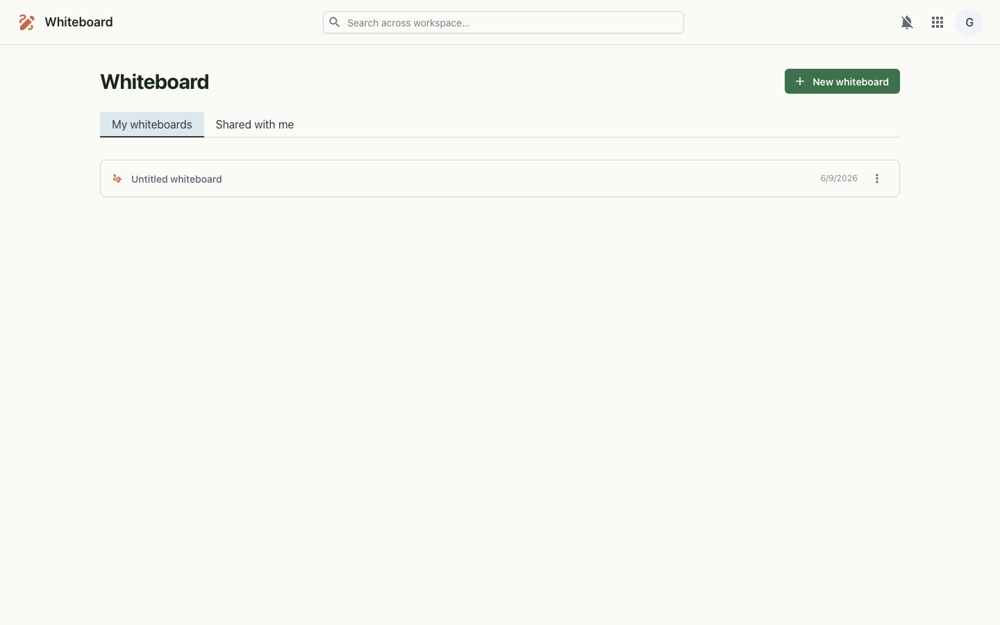

A real-time collaborative infinite canvas — sketch, diagram and brainstorm together, with live cursors and everything saved as you go.
Whiteboard is a shared drawing surface for your workspace. Open a board and you get an infinite canvas with shapes, arrows, freehand drawing, text and sticky notes. Invite teammates and you'll see their cursors move and their edits appear live — every change streams over a WebSocket and is autosaved, so the board is always up to date for whoever opens it next.

Each board's scene is stored as JSON in the platform database and autosaved by the editor. While a board is open, the editor holds a WebSocket to a per-board channel that relays both the live scene and presence (cursors and avatars) between everyone viewing it. Per-user access is governed by object grants, which also power cross-org sharing.